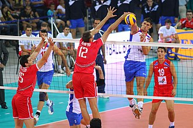
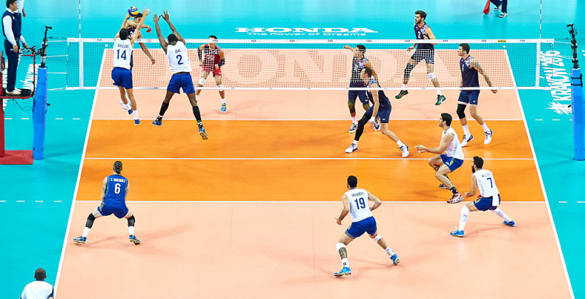
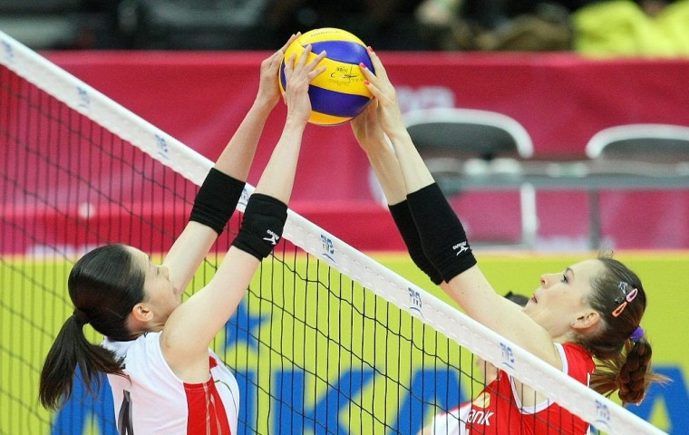
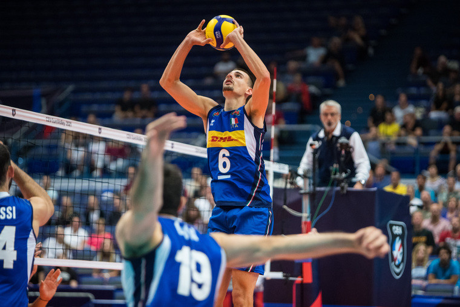
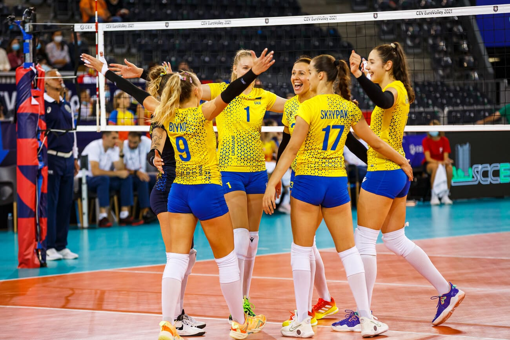
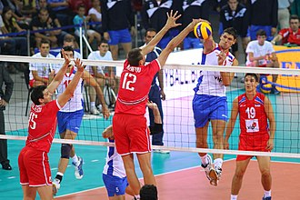
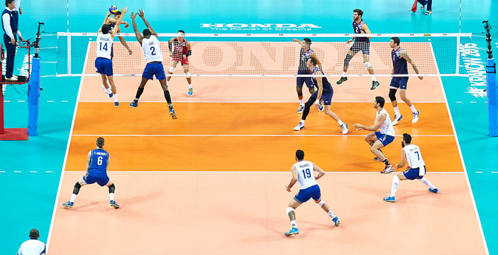
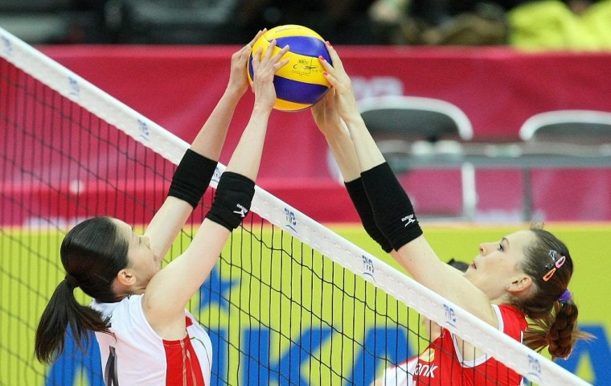
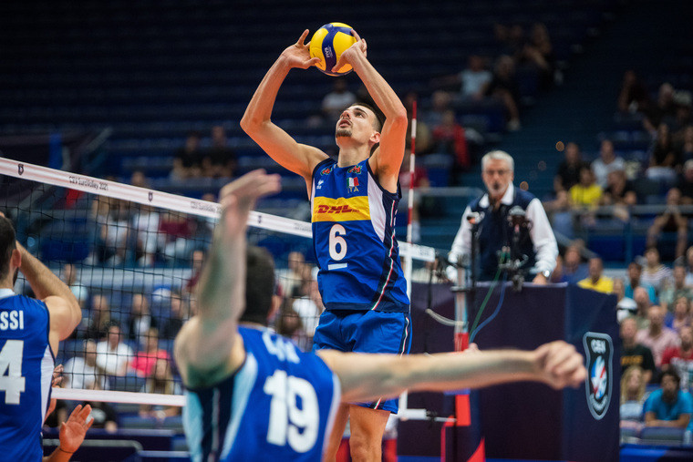
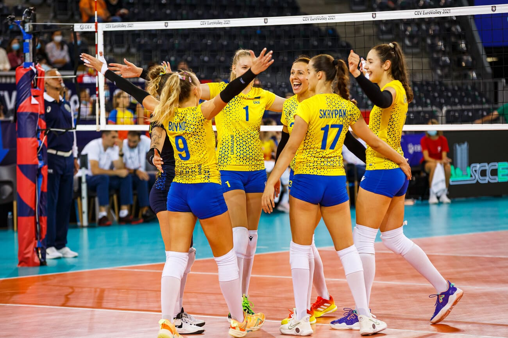

Гра в волейбол зародилася в 1895 у США; ініціатором гри вважається
В.Морган (штат Массачусетс).
Подальше поширення грипродовжилось у Японії, Китаї, на Філіппінах.
У Європі у волейбол уперше стали грати в Чехословаччині (1907). У 1947р.
утворена Міжнародна федерація волейболу (ФІВБ), що поєднує 110 країн (на
1 січня 1971).Офіційними змаганнями ФІВБ для жінок і чоловіків є першості
світу (з 1949), континентів, у тому числі Європи, - з 1948, а також змагання на
Кубок світу - для національних команд (з 1965) і Кубок Європи - для клубних
команд (з 1961). З 1964 жіночі і чоловічі змагання з волейболу включені в
програму Олімпійських ігор. Найбільше поширення волейбол одержав у
колишньому СРСР, Чехословаччині, Польщі, Японії, Мексиці, Бразилії.
У СРСР перші правила гри затверджені в 1926 році. У 1932 створена
Всесоюзна секція волейболу. Перша офіційна першість цієї гри в СРСР
проведена в 1933 серед збірних команд міст. У 1948 році Федерація волейболу
СРСР вступила у ФІВБ.
До України ж ця гра завітала 1925 року. У тодішньому Харкові мешкав
професор В.Блях.
Зокрема, прекрасний український жіночий колектив у Харкові створив
Георгій Шелекетін. У складі слобожанської чоловічої дружини відмінно діяв
Олексій Єсипенко. У збірній Дніпропетровська своєю неординарною грою
вирізнявся популярний на той час волейболіст Семен Великий.
Київ також славився своїми майстрами «летючого» м’яча. Це Михайло
Берлянд, Лев Вайнтрауб, Яків Маргуліс. Поруч з ними свій тренерський фах
удосконалював Леонід Небилицький, котрий пізніше успішно працював з
юнацькими збірними України.
Висновки: Сучасний волейбол - надзвичайно цікава й видовищна гра, яка носить характер змагального протиборства, регламентованого спеціальним кодексом правил. Це силові подачі, потужні нападаючі
удари, удари біля сітки та із задньої лінії, карколомні дії в захисті й під час блокування, складні технікотактичні дії за участю гравців передньої та задньої ліній. Завдяки своїй емоційності гра у волейбол є
засобом не тільки фізичного розвитку, а й активного відпочинку. Поряд із розв’язанням завдань
зміцнення здоров’я, різнобічної фізичної підготовки, вдосконалення життєво важливих рухових умінь та
навичок правильно підібрана методика навчання волейболу сприяє вихованню "волейбольних" талантів.
Цікаві фaкти про волейбол
| Факт |
Опис |
| Історія |
Волейбол з часом став одним із найбільш популярних видів спорту у світі, з понад 800 мільйонами прихильників. |
| Спочатку гра мала назву "Mintonette". |
| Олімпійський дебют |
Волейбол став олімпійським видом спорту у 1964 році на іграх у Токіо. |
| Найдовший матч у волейболі тривав понад 85 годин! |
 








